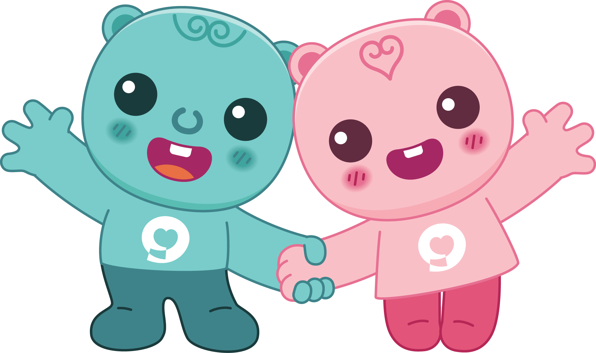

<!DOCTYPE html>
<html lang="ko">
<head>
    <meta charset="UTF-8">
    <meta name="viewport" content="width=device-width, initial-scale=1.0">
    <title>CareKit</title>
    <!-- Tailwind CSS CDN -->
    <script src=" https://cdn.tailwindcss.com"></script>
    <link rel="stylesheet" href=" https://cdnjs.cloudflare.com/ajax/libs/font-awesome/6.4.0/css/all.min.css">
</head>
<body class="bg-gray-50 text-gray-800 font-sans antialiased overflow-hidden">

    <div class="flex h-screen relative">
        
        <!-- [모바일 전용] 사이드바 열렸을 때 뒷배경 어둡게 처리 (터치 시 닫힘) -->
        <div id="sidebar-backdrop" onclick="closeSidebar()" class="fixed inset-0 bg-black/60 z-40 hidden md:hidden transition-opacity"></div>

        <!-- 1. 좌측 메뉴 바 (PC: 고정 노출 / 모바일: 슬라이드 드로어) -->
        <aside id="sidebar" class="fixed md:static inset-y-0 left-0 z-50 w-72 bg-gray-900 text-gray-300 flex flex-col border-r border-gray-800 shadow-2xl md:shadow-lg shrink-0 transform -translate-x-full md:translate-x-0 transition-transform duration-300 ease-in-out">
            <!-- 로고, 타이틀 및 [모바일 전용] 닫기 버튼 -->
            <div class="p-5 border-b border-gray-800 flex items-center justify-between">
                <div class="flex items-center space-x-3">
                    <div class="bg-blue-600 text-white p-2 rounded-lg">
                        <i class="fa-solid fa-notes-medical text-lg"></i>
                    </div>
                    <h1 class="text-lg font-semibold text-white tracking-tight">CareKit 케어키트</h1>
                </div>
                <!-- 모바일 전용 닫기(X) 버튼 -->
                <button onclick="closeSidebar()" class="md:hidden text-gray-400 hover:text-white p-2 focus:outline-none">
                    <i class="fa-solid fa-xmark text-lg"></i>
                </button>
            </div>

            <!-- 메뉴 리스트 -->
            <nav class="flex-1 overflow-y-auto p-4 space-y-2 text-sm">
                
                <!-- 1. [준요양기관 점검표] -->
                <div class="menu-group">
                    <button onclick="toggleSubMenu('checklist-sub')" class="w-full flex items-center justify-between p-3 rounded-lg hover:bg-gray-800 transition-colors text-left font-medium text-white">
                        <span class="flex items-center space-x-3">
                            <i class="fa-solid fa-clipboard-check text-blue-400 w-5"></i>
                            <span>준요양기관 점검표</span>
                        </span>
                        <i id="checklist-sub-icon" class="fa-solid fa-chevron-down text-xs transition-transform"></i>
                    </button>
                    <div id="checklist-sub" class="hidden pl-8 pr-2 py-1 space-y-1 mt-1">
                        <a href="javascript:void(0)" onclick="loadForm('준요양기관 점검표 - 양압기', 'cpap.html')" class="block p-2 rounded hover:bg-gray-800 text-gray-400 hover:text-white transition-colors">- 양압기</a>
                        <a href="javascript:void(0)" onclick="loadForm('준요양기관 점검표 - 산소발생기', 'oxygen.html')" class="block p-2 rounded hover:bg-gray-800 text-gray-400 hover:text-white transition-colors">- 산소발생기</a>
                        <a href="javascript:void(0)" onclick="loadForm('준요양기관 점검표 - 인공호흡기', 'breath.html')" class="block p-2 rounded hover:bg-gray-800 text-gray-400 hover:text-white transition-colors">- 인공호흡기</a>
                        <a href="javascript:void(0)" onclick="loadForm('준요양기관 점검표 - 기침유발기', 'cough.html')" class="block p-2 rounded hover:bg-gray-800 text-gray-400 hover:text-white transition-colors">- 기침유발기</a>
                    </div>
                </div>

                <!-- 2. [준요양기관 조회] -->
                <div class="menu-group">
                    <button onclick="toggleSubMenu('institution-sub')" class="w-full flex items-center justify-between p-3 rounded-lg hover:bg-gray-800 transition-colors text-left font-medium text-white">
                        <span class="flex items-center space-x-3">
                            <i class="fa-solid fa-hospital text-emerald-400 w-5"></i>
                            <span>준요양기관 조회</span>
                        </span>
                        <i id="institution-sub-icon" class="fa-solid fa-chevron-down text-xs transition-transform"></i>
                    </button>
                    <div id="institution-sub" class="hidden pl-8 pr-2 py-1 space-y-1 mt-1">
                        <a href="javascript:void(0)" onclick="loadUrl('준요양기관 조회 - 양압기', ' https://www.nhis.or.kr/nhis/policy/retrievePAPStoreList.do')" class="block p-2 rounded hover:bg-gray-800 text-gray-400 hover:text-white transition-colors">- 양압기</a>
                        <a href="javascript:void(0)" onclick="loadUrl('준요양기관 조회 - 산소발생기', ' https://www.nhis.or.kr/nhis/policy/retrieveHomeOxyStoreList.do')" class="block p-2 rounded hover:bg-gray-800 text-gray-400 hover:text-white transition-colors">- 산소발생기</a>
                        <a href="javascript:void(0)" onclick="loadUrl('준요양기관 조회 - 인공호흡기', ' https://www.nhis.or.kr/nhis/policy/retrieveHsnhmMdtrStoreList.do')" class="block p-2 rounded hover:bg-gray-800 text-gray-400 hover:text-white transition-colors">- 인공호흡기</a>
                        <a href="javascript:void(0)" onclick="loadUrl('준요양기관 조회 - 기침유발기', ' https://www.nhis.or.kr/nhis/policy/retrieveCoughAssistStoreList.do')" class="block p-2 rounded hover:bg-gray-800 text-gray-400 hover:text-white transition-colors">- 기침유발기</a>
                    </div>
                </div>

                <!-- 3. [등록제품 조회] -->
                <div class="menu-group">
                    <button onclick="toggleSubMenu('product-sub')" class="w-full flex items-center justify-between p-3 rounded-lg hover:bg-gray-800 transition-colors text-left font-medium text-white">
                        <span class="flex items-center space-x-3">
                            <i class="fa-solid fa-box-open text-amber-400 w-5"></i>
                            <span>등록제품 조회</span>
                        </span>
                        <i id="product-sub-icon" class="fa-solid fa-chevron-down text-xs transition-transform"></i>
                    </button>
                    <div id="product-sub" class="hidden pl-8 pr-2 py-1 space-y-1 mt-1">
                        <a href="javascript:void(0)" onclick="loadUrl('등록제품 조회 - 양압기', ' https://www.nhis.or.kr/nhis/policy/retrievePAPPrdList.do')" class="block p-2 rounded hover:bg-gray-800 text-gray-400 hover:text-white transition-colors">- 양압기</a>
                        <a href="javascript:void(0)" onclick="loadUrl('등록제품 조회 - 산소발생기', ' https://www.nhis.or.kr/nhis/policy/retrieveHomeOxyProductList.do')" class="block p-2 rounded hover:bg-gray-800 text-gray-400 hover:text-white transition-colors">- 산소발생기</a>
                        <a href="javascript:void(0)" onclick="loadUrl('등록제품 조회 - 인공호흡기', ' https://www.nhis.or.kr/nhis/policy/retrieveHsnhmMdtrPrdList.do')" class="block p-2 rounded hover:bg-gray-800 text-gray-400 hover:text-white transition-colors">- 인공호흡기</a>
                        <a href="javascript:void(0)" onclick="loadUrl('등록제품 조회 - 기침유발기', ' https://www.nhis.or.kr/nhis/policy/retrieveCoughAssistPrdList.do')" class="block p-2 rounded hover:bg-gray-800 text-gray-400 hover:text-white transition-colors">- 기침유발기</a>
                    </div>
                </div>

                <!-- 4. [보건복지부 고시] -->
                <div class="menu-group">
                    <button onclick="loadUrl('보건복지부 고시', ' https://www.nhis.or.kr/lm/lmxsrv/law/lawFullView.do?SEQ=83&SEQ_HISTORY=613565')" class="w-full flex items-center justify-between p-3 rounded-lg hover:bg-gray-800 transition-colors text-left font-medium text-white">
                        <span class="flex items-center space-x-3">
                            <i class="fa-solid fa-scale-balanced text-purple-400 w-5"></i>
                            <span>보건복지부 고시</span>
                        </span>
                        <i class="fa-solid fa-link text-xs text-gray-500"></i>
                    </button>
                </div>

            </nav>

            <div class="p-4 border-t border-gray-800 flex items-center justify-center">
                <div class="flex itmes-center">
                
            </div>
        </aside>

        <!-- 2. 우측 메인 콘텐츠 영역 -->
        <main class="flex-1 flex flex-col overflow-hidden bg-gray-100 min-w-0">
            <!-- 상단 헤더 (모바일 햄버거 버튼 포함) -->
            <header class="bg-white border-b border-gray-200 px-4 md:px-6 py-3 flex justify-between items-center shadow-xs shrink-0">
                <div class="flex items-center space-x-3 truncate">
                    <!-- [모바일 전용] 햄버거 메뉴 열기 버튼 -->
                    <button onclick="openSidebar()" class="md:hidden text-gray-700 hover:text-gray-900 p-1.5 rounded-lg border border-gray-200 hover:bg-gray-100 focus:outline-none">
                        <i class="fa-solid fa-bars text-base"></i>
                    </button>
                    <div class="truncate">
                        <h2 id="content-title" class="text-base md:text-lg font-bold text-gray-800 truncate">스마트한 준요양기관 점검을 위한 케어키트</h2>
                        <span id="breadcrumb" class="text-[11px] md:text-xs text-gray-400 hidden sm:inline-block">임대기기 치료서비스 제공 준요양기관 점검 자료를 한 눈에 확인하세요</span>
                    </div>
                </div>
                
                <!-- 새 창으로 열기 버튼 -->
                <a id="external-link-btn" href="#" target="_blank" class="hidden items-center space-x-1 px-2.5 py-1.5 bg-gray-100 hover:bg-gray-200 text-gray-700 rounded-lg text-xs font-medium transition-colors shrink-0">
                    <span>새창</span>
                    <i class="fa-solid fa-arrow-up-right-from-square text-[10px]"></i>
                </a>
            </header>

            <!-- 컨텐츠 표시 뷰포트 -->
            <div class="flex-1 p-2 sm:p-4 overflow-hidden relative">
                
                <!-- 1) 기본 안내 화면 -->
                <div id="view-placeholder" class="w-full h-full bg-white border border-gray-200 rounded-xl flex flex-col justify-center items-center text-center p-6">
                    <div class="mb-4">
                        
                    </div>
                    <h3 class="text-base sm:text-lg font-semibold text-gray-800 mb-1">임대기기 치료서비스 제공 준요양기관 점검을 시작해 볼까요</h3>
                    <p class="text-gray-500 max-w-sm text-xs sm:text-sm">
                        <span class="md:hidden">상단의 <strong>메뉴(☰) 버튼</strong>을 눌러</br> 점검표, 기관·제품 정보, 고시를 확인하세요.</span>
                        <span class="hidden md:inline">좌측 메뉴에서 점검표, 기관·제품 정보, 고시를 확인하세요.</span>
                    </p>
                </div>

                <!-- 2) 웹페이지/서식 즉시 연동 영역 (iframe) -->
                <div id="view-iframe" class="hidden w-full h-full bg-white border border-gray-200 rounded-xl overflow-hidden shadow-xs relative">
                    <iframe id="target-iframe" src="" class="w-full h-full border-0" title="화면 연동 영역"></iframe>
                </div>

            </div>
        </main>
    </div>

    <!-- 반응형 스크립트 -->
    <script>
        // 사이드바 엘리먼트 제어
        const sidebar = document.getElementById('sidebar');
        const backdrop = document.getElementById('sidebar-backdrop');

        function openSidebar() {
            sidebar.classList.remove('-translate-x-full');
            backdrop.classList.remove('hidden');
        }

        function closeSidebar() {
            sidebar.classList.add('-translate-x-full');
            backdrop.classList.add('hidden');
        }

        // 모바일 화면일 경우 메뉴 선택 후 사이드바 닫기
        function checkMobileAutoClose() {
            if (window.innerWidth < 768) {
                closeSidebar();
            }
        }

        // 하위 메뉴 접기/펼치기
        function toggleSubMenu(id) {
            const element = document.getElementById(id);
            const icon = document.getElementById(id + '-icon');
            element.classList.toggle('hidden');
            icon.classList.toggle('rotate-180');
        }

        // 헤더 텍스트 갱신
        function updateHeader(title) {
            document.getElementById('content-title').innerText = title;
            document.getElementById('breadcrumb').innerText = "메인 > " + title;
        }

        // 점검표 로드 (서식 파일 연동)
        function loadForm(title, formFilePath) {
            updateHeader(title);
            checkMobileAutoClose();

            document.getElementById('view-placeholder').classList.add('hidden');
            document.getElementById('view-iframe').classList.remove('hidden');

            const iframe = document.getElementById('target-iframe');
            iframe.src = formFilePath;

            const extBtn = document.getElementById('external-link-btn');
            extBtn.href = formFilePath;
            extBtn.classList.remove('hidden');
            extBtn.classList.add('inline-flex');
        }

        // 외부 URL 로드
        function loadUrl(title, url) {
            updateHeader(title);
            checkMobileAutoClose();

            document.getElementById('view-placeholder').classList.add('hidden');
            document.getElementById('view-iframe').classList.remove('hidden');

            const iframe = document.getElementById('target-iframe');
            iframe.src = url;

            const extBtn = document.getElementById('external-link-btn');
            extBtn.href = url;
            extBtn.classList.remove('hidden');
            extBtn.classList.add('inline-flex');
        }
    </script>
</body>
</html
